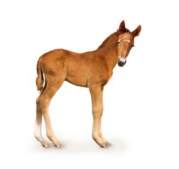
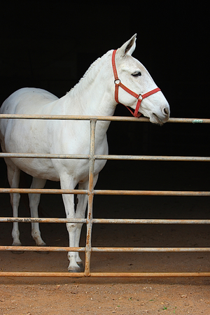
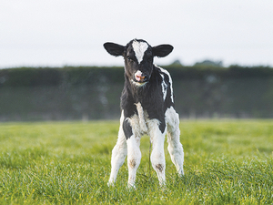

ⲙⲁⲥⲡⲟⲣⲕ v ⲡⲟⲣⲕ.
(noun male)
species
B once
foal, calf
with ⲙⲁⲥ- SAB, ⲙⲉⲥ- S mule [ημιονος, ρεδη]
foal, calf
with ⲙⲁⲥ- SAB, ⲙⲉⲥ- S mule [ημιονος, ρεδη]



complete
186b
268a
268a
ⲡⲟⲣⲕ, -ⲉⲕ S, ⲡⲁⲣⲕ SfAF, ⲫⲟⲣⲕ B (once) nn m f, a foal, calf: ShC 42 91 ϩⲉⲛⲡ. ⲛⲧⲃⲛⲏ, ib ⲙⲡ. ⲛⲛⲉⲧⲛⲧⲃⲛⲟⲟⲩⲉ, CO 221 will tend camel ⲛⲧⲁⲣ ϩⲱⲃ ⲉⲧⲡ. Also ? in ϩⲁⲡⲟⲣⲕ. b with ⲙⲁⲥ- SAB, ⲙⲉⲥ- S (v ⲙⲓⲥⲉ) mule, cf ? פרד: Ge 12 16 (B ⲧⲉⲙⲑⲁⲙ), 2 Kg 18 9 f, ib m, 3 Kg 1 33 f, Is 66 20 Sf (B do), Zech 14 15 A (B do) ἡμίονος; Ap 18 13 (B om), ῥέδη; ShBor 246 19 ⲡⲙⲉⲥⲡ., JA '88 2 368 ⲛⲉⲙⲟⲩⲗⲓⲁⲣⲏⲥ (cf μουλάρι) ⲙⲛⲛⲉⲙⲁⲥⲡ. (ref Ps 31 9), Mor 31 254 horses & ⲙⲁⲥⲡ. = BMEA 10578 F, Z 269 not a thorough gentleman (ἐλεύθερος) but of mixed breed like ⲛⲉⲓⲙⲁⲥⲡ., TstAb 160 B ⲟⲩⲙⲁⲥ ⲙⲫ. m.
See also:
Homonyms:
| view | ⲥⲏϭ SF ⲥⲓϭ, ⲥⲓⲉⲓϭ A ⲥⲏϫ B female: ⲥⲉⲉϭⲉ S | (noun male) foal of ass, horse [πωλος]1548 |
| view | ⲙⲓⲥⲉ SAL ⲙⲓⲥⲓ BF ⲙⲉⲥⲓⲉ O ⲙⲁⲥ- SB ⲙⲉⲥ- SABF ⲙⲉⲥⲧ- S ⲙⲁⲥⲧ⸗, ⲙⲉⲥⲧ⸗ SA ⲙⲁⲥ⸗ SB ⲙⲓⲥⲧ⸗ O ⲙⲟⲥⲉ† S ⲙⲟⲥⲓ† B p c ⲙⲁⲥ- SABF p c ⲙⲉⲥ- SAF | (verb) intr: bear, bring forth [τικτειν, γενναν]
tr: bear young qual: be newly delivered, give suck26 |
| view | ⲃⲟⲉⲓⲧ S ⲃⲁⲓⲧ Sa | (noun male/female) ox or cow [βους, τραγος]607 |
| view | ⲉϩⲉ SAB ⲁϩⲏ F plural: ⲉϩⲟⲟⲩ, ⲉϩⲏⲩ S plural: ⲉϩⲉⲩ SAB plural: ⲉϩⲁⲩ L plural: ⲉϩⲱⲟⲩ, ⲉϩⲉⲟⲩ B plural: ⲁϩⲁⲩ, ⲏϩⲁⲟⲩ F | (noun male/female) ox & cow [βους, βουκολιον]682 |
| view | ⲃⲁϩⲥⲉ SA ⲃⲁϩⲥⲓ B ⲃⲉϩⲥⲓ F | (noun female) heifer [δαμαλις]2742 |
| view | ⲕⲧⲏⲣ S | (noun male) calf [μοσχαριον, δαμαλις]880 |
| view | ⲧⲃⲛⲏ SL ⲧⲃⲛⲓ A ⲧⲉⲃⲛⲏ BF ⲧⲩⲃⲛⲏ F plural: ⲧⲃⲛⲟⲟⲩⲉ, ⲧⲉⲃⲛⲏⲟⲩ, ⲧϥⲛⲏⲩ, ⲧⲃⲛⲉⲩ S plural: ⲧⲃⲛⲉⲩⲉ SaA plural: ⲧⲃⲛⲏⲩⲉ Sa plural: ⲧⲃⲛⲉⲟⲩⲉ A plural: ⲧⲃⲛⲁⲩⲉ L plural: ⲧⲃⲛⲱⲟⲩⲓ B plural: ⲧⲃⲛⲁⲩⲓ, ⲧⲃⲛⲁⲟⲩⲉⲓ, ⲧⲉϥⲛⲁⲩⲉⲓ F | (noun male) beast, domestic animal [κτηνος, τετραπους, ζωον, υποζυγιον]712 |
| view | ϩⲧⲟ, ϩⲧⲱ SA ⲉϩⲧⲟ S ϩⲑⲟ B (ⲉ)ϩⲧⲁ F ϩⲧⲉ- A female: ϩⲧⲱⲣⲉ, ϩⲧⲟⲟⲣⲉ S female: ϩⲧⲱⲣⲏ, ϩⲧⲟⲣⲏ L female: (ⲉ)ϩⲑⲟⲣⲓ B female: (ⲉ)ϩⲧⲁ(ⲁ)ⲣⲓ F plural: (ⲉ)ϩⲧⲱⲱⲣ SF plural: (ⲉ)ϩⲧⲱⲱⲣⲉ S plural: ϩⲧⲱⲣ SAF plural: (ⲉ)ϩⲑⲱⲣ, ϩⲑⲟⲣ B plural: ϩⲧⲟⲩⲣⲉⲩⲉ A | (noun male) horse [ιππος]
f, mare [ιππος, φορος]2303 |
| view | ⲉⲓⲱ SL ⲉⲉⲓⲱ, ⲉⲓⲟⲩ, ⲉⲟⲩ S ⲓⲟⲩ A ⲓⲱ SBF ⲓⲁⲱ, ⲉⲱ SB ⲉⲓⲁ-, ⲓⲁ- S ⲉⲓⲁ- AF ⲓⲁ- B plural: ⲉⲟⲟⲩ, ⲉⲱⲟⲩ S female: ⲉⲓⲱⲟⲩⲉ, ⲉⲟⲟⲩⲉ S female: ⲉⲁⲩⲉ A female: ⲉⲉⲩ, ⲉϩⲉⲩ B | (noun male/female) ass [ονος]693 |
Homonyms:
| view | ⲡⲟⲣⲕ S ⲫⲱⲣⲕ, ⲫⲟⲣⲕ B ⲡⲁⲣⲉⲕ F | (noun male) outer mantle of clerics, monks, pallium
boat's sail1277 |
| view | ⲡⲱⲣⲕ SA ⲫⲱⲣⲕ B ⲡⲣⲕ-, ⲡⲉⲣⲕ- S ⲫⲉⲣⲕ- B ⲡⲟⲣⲕ⸗ S ⲡⲁⲣⲕ⸗ A ⲫⲟⲣⲕ⸗ B ⲫⲉⲣⲕ† B | (verb) intr: be plucked out, destroyed [εκριζουσθαι, αφανιζεσθαι]
tr: pluck, root out [εκτιλλειν]200 |